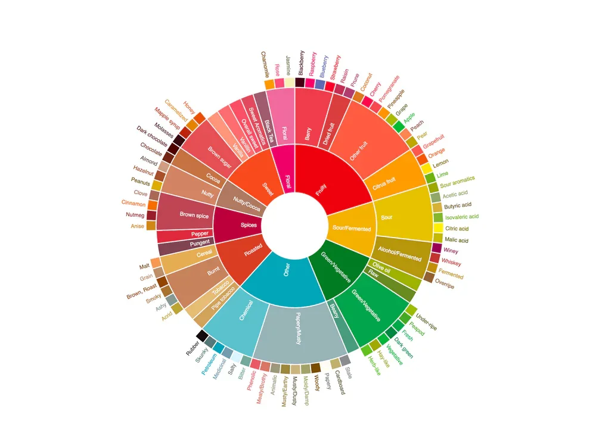
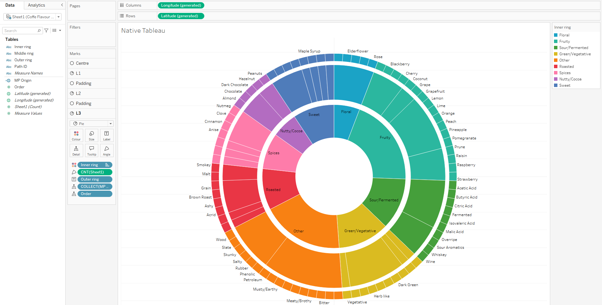
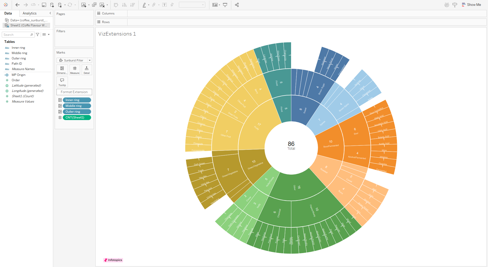
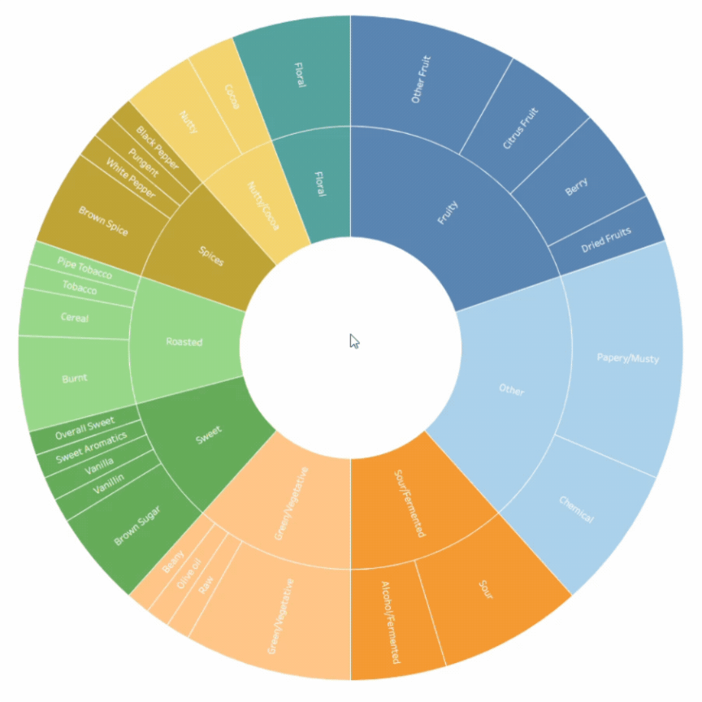
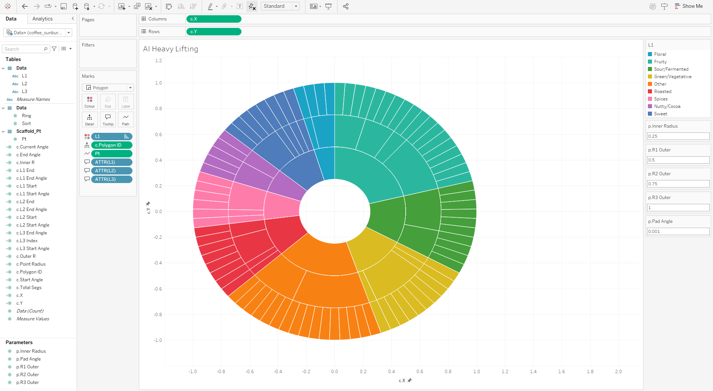

I have a coffee subscription. Every month, a new batch drops through my door along with a little gift. This month the gift was a print of a coffee flavour wheel—one of those beautiful circular charts that breaks down tasting notes into nested categories like "fruity > berry > blueberry" or "spices > pungent > pepper."

Naturally, I thought: I could recreate that in Tableau.
Not because I needed to. Just because it seemed fun. And what started as a weekend experiment turned into an exploration of different approaches to building sunburst charts in Tableau, culminating in a bit of an "aha moment" about how AI is fundamentally changing the way we work with data visualization tools.
Method 1: The Classic Map Layers Approach

I started with a method that I've used to create sunburst charts before - using map layers with the MAKEPOINT function. The process is straightforward if you've done it before: create a spatial field for a point at the origin ( MAKEPOINT(0,0) ), add layers for your inner ring segments, middle ring, and outer ring, put count on angle, crank up the size, and layer them on top of each other.
Add borders so the segments are visible, and you start building up that radial structure. I also added some additional layers to act as spacers between the rings. You can easily format as you would any Tableau worksheet, and clean up tooltips to show the full hierarchical path - inner level, middle level, outer level - giving users context about where they are in the taxonomy.
I rushed through building this version as a starting point. Until recently this was the easiest method available. It works. It's functional. But let's be real—it's also a bit painstaking. The sizing is very sensitive, needing to move the slider a couple of pixels at a time. If you’ve done this, you definitely know the pain!
Pros: Native Tableau functionality, full control over formatting, works everywhere
Cons: Manual setup for each layer, labels never show very well, interactivity means an entire pie slice gets highlighted when you select any mark
Method 2: Viz Extensions (The Tempting Shortcut)

Then I wondered: there must be a viz extension for this, right?
Viz extensions are a relatively new feature in Tableau. You'll find them in your Marks card at the bottom - there's an "add extension" option that opens up a gallery. Most of these won't work on your Tableau Server, but many work on Tableau Public. Filter to show what works with Public and include the partner-built extensions, and you'll see offerings from folks like Tristan and Jessica at LaDataViz, plus some from Infotopics and others.
Viz extensions essentially allow you to embed a webpage within a Tableau worksheet. It means that you can create custom visualisations directly in Tableau without the complex calculations and hacks we are all used to.
I found Infotopics' sunburst extension, which looked exactly like what I needed. Drag your three hierarchical dimensions onto the dimension shelf, add your count measure, and boom - instant sunburst chart. The formatting options let you limit colours to level 1 layers and input hex codes for custom palettes. Colour legends work differently than native Tableau, which makes assigning colours take a little longer..
But here's what killed it for me: you can't really format the labels. You're stuck with numbers on every segment, can't adjust label size without losing a lot of the labels, and the whole thing feels a little inflexible. There's a "currently" in their documentation suggesting this may improve in the future, but right now it's limiting.
Infotopics also offers a zoomable version where clicking a segment drills into its children—clicking "spices" expands to show "pungent," "brown spice," etc. That's genuinely cool and addresses the readability issues with tiny outer segments.

Pros: Incredibly fast to build, some nice interactive features
Cons: Requires paid extensions on Tableau Server or Cloud, limited formatting control, inconsistent label handling
Method 3: AI-Generated Polygon Method (Where Things Get Interesting)

This is where my perspective shifted.
I decided to see if AI could help me build this natively in Tableau without extensions. I jumped into Claude and asked what the best way to build a sunburst chart in Tableau was.
Claude suggested map layers (which I'd already done) but also mentioned a polygon method. I thought, okay, let's explore that. I have done plenty with polygons in the past so knew enough to see quickly if Claude was taking me on a good path.
What happened next genuinely blew my mind.
Claude didn't just give me calculations - it built out an entire implementation guide. I shared the coffee flavour wheel image with it, and Claude created a complete Excel workbook with multiple sheets: the data pulled from the original image, an instructions page explaining how to connect data and create parameters, all the calculated fields I'd need with proper formulas, and a step-by-step guide for building the viz.
The data sheet had all the segments for each ring properly structured, but what surprised me most was that Claude was remarkably good at generating the Tableau calculations. The formulas were correct, the logic was sound, and the structure made sense.
I followed the instructions, connected the data, created the parameters, built out the calculated fields Claude provided, and assembled the visualization following its step-by-step guide. The result was a fully functional sunburst chart using polygons, with proper hierarchical relationships and clean segment boundaries.
This would always have been my favoured method. I love getting deep into calculations and trigonometric functions. In the past I’d have happily spent hours building out something like this. It’s unlikely I’ll do that again. Using AI, this took under 20 minutes from the first prompt to the visual you see in the image above.
Pros: Native Tableau solution, customizable, works on Server, Cloud, and Public, AI handles the heavy lifting
Cons: Still requires manual implementation, need to trust AI-generated calculations
Method 4: Pure HTML/JavaScript (The Nuclear Option)
At this point I was curious how far this could go. Could AI just... generate the entire visualization as standalone code?
So I asked Cursor to create the sunburst chart using HTML, CSS, and JavaScript. And it did. In minutes.
The code was clean, well-commented, and actually worked. I could paste it into an HTML file, open it in a browser, and have a fully interactive sunburst chart with hover states, smooth animations, and responsive behavior. No Tableau required.
Now, could I embed this in Tableau? Theoretically yes—you can embed web pages in dashboards. But at that point, you're essentially bypassing Tableau's functionality entirely. You're just using it as a frame for external content.
This is effectively what Viz Extensions are. The difference is that Viz Extensions are embedded at a worksheet level, this would be embedded on a dashboard. Viz Extensions also allow more flexibility, connecting to Tableau’s data pane, making them reusable across different projects. Exploring this side further will definitely be next on my to do list!
What This Means for the Tableau Landscape
Here's why this matters beyond just sunburst charts.
The Tableau landscape is changing rapidly, and AI-driven techniques are becoming not just helpful but essential to keep up. What used to take hours of forum searching, trial and error with calculations, and painstaking manual work can now be scaffolded by AI in minutes.
But (and this is crucial) you still need to understand what you're doing. AI generates code and calculations, but you need to verify them, understand the logic, and know when something's wrong. Claude was surprisingly accurate with the Tableau calculations, but that doesn't mean you should blindly trust every formula it spits out.
The real power isn't in replacing your Tableau skills. It's in augmenting them. Use AI to:
Generate initial calculation scaffolding that you then refine
Explore methods you hadn't considered (I wouldn't have tried polygons on my own with this data)
Accelerate data structure creation
Prototype quickly and iterate
The map layers method still has its place for simple, native solutions. Viz Extensions offer speed and don't need deep customization. AI-assisted polygon building gives you power and flexibility while keeping everything in Tableau. Pure HTML generation shows you what's possible outside the platform, but also gives a window into what could be brought in through Viz Extensions.
The method you use in the end depends on your constraints and exact use cases. For my coffee flavor wheel (this will be built out into a full viz) I will probably use the polygon method. It gives me the control I wanted, worked natively in Tableau, and the AI scaffolding saved hours of calculation writing.
//
The real lesson here is about mindset. We're at an inflection point where AI isn't just a novelty - it's becoming part of the data visualization workflow. The people who figure out how to effectively collaborate with these tools, using them to accelerate and enhance rather than replace understanding, are going to have a significant advantage.
Next time you’re building something complex in Tableau, spend 10 minutes with Claude or ChatGPT. See what it generates. Critique it. Improve it. Learn from it.
For now, I’m off to make another coffee - tasting notes of caramel, nutmeg, and dark chocolate this month!
Take care // Chris